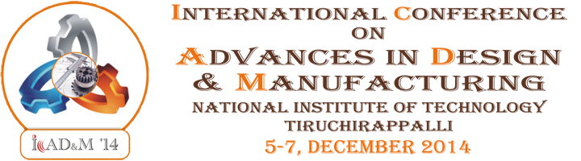

CONFERENCE THEME
The theme of the conference - 'Sustainability in Design and Manufacturing' aims at meeting the needs of the present demands of the customer without compromising the ability of future generations to meet their own needs. International Conference on Advances in Design and Manufacturing is organized on the paramount mission to fulfil the need of the nation for its technological transfer and knowledge dissemination through strong links with the industrial researchers, scientists and academicians. The uniqueness of this conference is the close symbiotic relationship between design and manufacturing and Technical Expo where leading industries display their products and interact with the participants.
The conference emphases the following topical areas:- Engineering Design
- CAD/CAM/CIM
- FEM/FDM/FVM
- MEMS/NEMS
- Macro/Micro/Nano manufacturing
- Materials Engineering
- Industrial Engineering
- Optimization Techniques and Scheduling
- Modeling and Simulation
- Biomedical Engineering
- Robot Mechanisms and Synthesis
AIM OF THE CONFERENCE
The International Conference on Advances in Design and Manufacturing (ICAD&M'14) aims to provide an interdisciplinary forum for the leading academicians, scientists and industrial personnel working in the areas of design and manufacturing to exchange their views and share their experiences.
TECHNICAL EXPO
ABOUT NIT TRICHY
The National Institute of Technology (formerly known as Regional Engineering College) Tiruchirappalli, situated in the heart of Tamil Nadu on the banks of river Cauvery,
was started as a joint and co-operative venture of the Government of India and the Government of Tamil Nadu in 1964 with a view to catering to the needs of man-power in
technology for the country. The college has been conferred with autonomy in 1987 to achieve rapid development. Because of this rich experience,
this institution was granted Deemed University Status with the approval of the UGC/AICTE and Govt. of India in the year 2003
and renamed as National Institute of Technology.
The institution offers Under Graduate Courses in ten branches and Post Graduate Courses in twenty one disciplines of Science, Engineering & Technology besides Ph.D. and M.S. (by research) in all the departments.
The college is an example of cultural unity with students drawn from most of the states in the country. NITT is witnessing an exponential growth in R&D activities. Apart from huge consultancy works undertaken by our engineering departments,
academic research is gaining its momentum day by day. Nearly 200 research scholars are undergoing their Ph.D in various fields in all the departments. NITT has signed MOUs with industries and institutions in India and abroad to promote collaborative research and academic initiatives.
ABOUT TIRUCHIRAPALLI
Tiruchirappalli also called Tiruchi or Trichy, is a city in the Indian state of Tamil Nadu and the administrative headquarters of Tiruchirappalli District.
It is the fourth largest municipal corporation and the fourth largest urban agglomeration in the state.
Located 322 km south of Chennai and 379 km north of Kanyakumari, Tiruchirappalli sits almost at the geographic centre of the state.
The Kaveri Delta begins 16 kilometres west of the city as the Kaveri river splits into two, forming the island of Srirangam now incorporated into Tiruchirappalli City Municipal Corporation.
The most prominent historical monuments in Tiruchirappalli include the Rockfort, the Ranganathaswamy temple at Srirangam and the Jambukeswarar temple at Thiruvanaikaval.
The archaeologically important town of Uraiyur, capital of the Early Cholas, is now a suburb of Tiruchirappalli. A major road and railway hub in the state, the city is served by an international
airport which operates flights to Southeast Asia and the Middle East.
CALL FOR PAPERS
Original technical research articles for Oral and Poster sessions in the following topics and associated areas are invited.
- Innovations in Design
- Mechanism Design and Synthesis
- Actuator Systems
- Coatings and Surface Modification
- Welding
- Design for Manufacturability (DFM)
- Friction and Wear Mechanism
- Integrated Product and Process Design
- Manufacturing Systems and Management
- MEMS / NEMS
- Micro/Nano Tribology
- Non-conventional Processing
- 3D Printing
- Rapid Prototyping
- Modeling and Simulation of Manufacturing Processes
- CAD/CAM/CIM
- Emerging Technologies in Design and Manufacturing
- Biomedical and Tissue Engineering
- Biomedical Manufacturing
- Nano manufacturing Processes and Systems
- Design and Operations of Manufacturing Systems for Responsiveness
- Advances in Metal Forming
- Operations Research
- Development and Applications of Micro Manufacturing Equipment
- Decision Analysis - Theory and Method
- Logistics Engineering and Management
- Supply Chain Management
- System Modeling and Simulations
- Lean / Agile Manufacturing
Important Dates
Submission of Extended abstracts : 5 September 2014
Intimation of abstract acceptance : 18 September 2014
Submission of full paper : 5 October 2014
Intimation of review comments of full paper : 25 October 2014
Submission of camera ready paper : 9 November 2014
Last date for registration : 15 November 2014
Registration
This page is under construction. Please try again later
Submission of Extended abstract
Extended Abstracts in MS word format not exceeding three A4 sheets covering abstract, keywords, brief introduction, part of experimental / numerical studies, inferences and relevant references should be submitted through Email: icadm14@nitt.edu.
The Extended Abstract template may be downloaded by clicking on the following links.
Word Document Format (.doc)
Portable Document Format (.pdf)
Publication
All papers submitted to the conference will be peer reviewed and evaluated for its originality, technical content and relevance to the conference. Peer reviewed papers will be published in Scopus / SCI Indexed Journals.
Best Paper Award
The following awards for the best research articles will be selected by a panel of experts:
* Best Oral Presentation
* Best Poster Presentation
COMMITTEES
International Technical Committee
- Dr. JN Reddy, Texas A&M University, USA
- Dr. Prabhakaran Ramamurthy, Old Dominian University, USA
- Dr. A Senthil Kumar, NUS, Singapore
- Dr. M. Rahman, NUS, Singapore
- Dr. Dandu Raju, Kansas State University, USA
- Shri. A V Krishnan, ED, BHEL Trichy
- Dr. Angappa Gunashekaran, University of Massachusetts Dartmouth, USA
- Dr. Goh Keng Hock Mark, NUS, Singapore
- Dr. S. Viswanathan, NTU, Singapore
- Dr. Subramanian Nachiappan, Nottingham University Business School, China
- Dr. Alfin Leo, Parker Filtration, Canada
- Dr. P.D.D. Dominic, Universiti Teknologi PETRONAS, Malaysia
- Dr. Rosa M. Miranda, Universidade Nova de Lisboa, Portugal
- Prof. Rahul Sharma, RWTH - Aachen University, Germany
- Dr. Wei Zhou, NTU, Singapore
Advisory Committee
Chief Patron
Dr. Rajaram Nityananda, Chairman, BOG, NIT-T
Patron
Dr.Srinivasan Sundarrajan, Director, NIT-T
Advisory Committee members
- Dr. A. Noorul Haq, Dean (Faculty Welfare)
- Dr. S. Arul Daniel, Dean (Academic)
- Dr. B. Venkataramani, Dean (Research & Consultancy)
- Dr. G. Venkatesa Prabhu, Dean (Students Welfare)
- Dr. C. Nagamani, Dean (Planning and Development)
- Dr. Samson Mathew, Chief of Works
- Dr. M. Punniyamoorthy, Dean (Institute Development)
- Dr. T. Suthakar, Head, Mechanical Engineering
- Dr. S. Kumanan, Head, Production Engineering
- Dr. K. Sankaranarayanasamy, Professor, Mechanical Engineering
- Dr. P. Asokan, Professor, Production Engineering
- Dr. T. Ramesh
- Dr. P. Parthiban
- Dr. N. Siva Shanmugam
Convener(s)
Organising Secretaries
Organising Committee
- Dr. S. Shanmugam Dr. R. Narayanasamy
- Dr. M. Udayakumar Dr. T. Selvaraj
- Dr. J. Sarangan Dr. V. Pakkirisamy
- Prof. S.S. Arulappan Dr. M. Duraiselvam
- Dr. K. Pannir Selvam Dr. P. Sathiya
- Dr. S.P. Sivapirakasam Dr. R. Jeyapaul
- Dr. R.B. Anand Dr. C. Sathiyanarayanan
- Prof. M. Shahul Hameed Dr. P. Senthil
- Dr. S. Venkatachalapathy Dr. S. Prasanna Venkatesan
- Dr. S. Suresh Dr. K. Panneerselvam
- Dr. AR. Veerappan Dr. J. Jerald
- Dr. V. Arul Mozhi Selvan Dr. V. Senthil Kumar
- Dr. R. Anand Dr. V. Anandakrishnan
- Dr. K.R. Balasubramanian Dr. S. Vinodh
- Prof. V. Mariappan Dr. D. Lenin Singaravelu
- Prof. Nanda Naik Korra
National Technical Committee
- Dr. M S Shunmugam, IIT, Madras
- Shri. A. Maruthamuthu, BHEL, Trichy
- Dr. C.R. Kandasamy, Former Principal, NIT, Trichy
- Dr. V. Shanmuganathan, JJCET
- Dr. R. Gnanamoorthy, IIIT D&M, Kancheepuram
- Dr. L. Vijayaraghavan, IIT, Madras
- Dr. AR. Mohanty, IIT, Kharagpur
- Dr. R. Jayaganthan, IIT, Roorkee
- Dr. P. Ramkumar, IIT, Madras
- Dr. G. Buvanashekaran, BHEL, Trichy
- Dr. L. Karunamoorthy, Anna University, Chennai
- Dr. T.K. Suresh Babu, NIT, Calicut
- Dr. Amaresh Chakraborty, IISc, Bangalore
- Dr. G.K. Ananthasuresh, IISc, Bangalore
- Dr. P. Veeramani, CECRI, Karaikudi
- Dr. N. Palaniswamy, CECRI, Karaikudi
- Dr. S. Das, AMPRI, Bhopal
- Shri. S. Sundarajan, BHEL, Trichy
- Dr. TT Narendran, IIT, Madras
- Dr. K. Ganesh, Mckinsey & Company, Chennai
- Dr. R. Sreedharan, NIT, Calicut
- Dr. G. Ranga Janardhana, JNTU, Andhra Pradesh
- Dr. Satish V Kailas, IISc, Bangalore
- Dr. M. Kamaraj, IIT, Madras
- Dr. V. Balasubramanian, Annamalai University, Chidambaram
Workshops
Pre-Conference Workshop
A preconference workshop focusing on 'Composites and their applications in aerospace and automotives' will be conducted on 04.12.2014. The workshop is meant for Students, Faculties of Engineering Institutions and practicing engineers. The workshop includes topics on Nano-Composites and their applications also.
Manufacturer's Presentation
Manufacturers/Suppliers of application software's, machinery and equipment would be invited to the conference to present their products/services/innovations in the specific sessions arranged for manufacturer's presentation.
Technical Expo
As part of the conference a Technical Expo is arranged where in state of the art equipment, machinery and systems will be on display from the world leaders in the respective areas. The end users connect with solution providers and the synergy emerging from these may facilitate newer innovations.
Sponsorship
Conference Sponsorship
Logos of sponsoring companies will be displayed on all conference materials and presentation halls. Color advertisements will be provided in the souvenir for platinum and gold sponsors. All the sponsors will be provided a slot in manufacturer's presentation and stall in Technical expo.
Platinum - Rs. 3 Lakhs / USD 5500
Gold - Rs. 2 Lakhs / USD 4000
Silver - Rs. 1 Lakh / USD 2500
Souvenir & Advertisements
A Souvenir containing conference details, abstracts of papers to be presented and advertisements of the sponsors will be released during the inauguration of the conference.
Advertisements for the Conference Souvenirs can be booked at the following rates:
Full page B&W - Rs. 10,000 / USD 300
Full page Multi Colour - Rs. 15,000 / USD 400
Second Cover Multi Colour - Rs. 20,000 / USD 500
Third Cover Multi Colour - Rs. 15,000 / USD 400
Back Cover Multi Colour - Rs. 20,000 / USD 500
4 page centre spread Multi Colour - Rs. 40,000 / USD 1000
Half Page B/W - Rs. 5,000 / USD 150
Accomodation
This page is under construction. Please try again later.
Contact
THEME : Sustainability in Design and Manufacturing
DATES : December 5 - 7, 2014
ORGANISED BY : Department of Mechanical & Production Engineering
National Institute of Technology
Tiruchirappalli - 620 015,
Tamil Nadu, INDIA
CORRESPONDING ADDRESS :
Dr. K. Sankaranarayanasamy,
Convener - ICAD&M'14,
Department of Mechanical Engineering,
National Institute of Technology,
Tiruchirappalli - 620 015, Tamilnadu, India
Email: icadm14@nitt.edu
Website: https://icadm14.nitt.edu
Phone: +91 431 250 3403, Fax: +91 431-2500133
Mobile: +919994339803, +91 9894366899, +919443649278